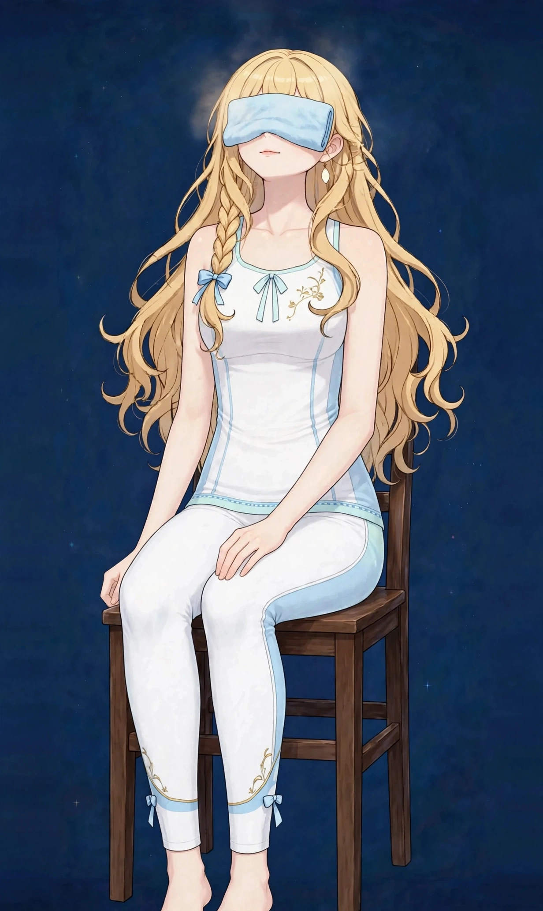

梅田で画面仕事の目の疲れケア｜パソコン・スマホで重い目のまわりに頭・休息

夕方になると目が重く、画面の文字がにじんで見える。仕事終わりにはスマホを見る気力もない——パソコンとスマホに囲まれた働き方では、目の疲れは「目の問題」だけでは終わりません。首・肩・頭部までセットで重くなるのが、画面仕事の目の疲れの特徴です。
画面仕事の目の疲れはどんな状態か
画面仕事の目の疲れは、近くの画面を見続けることで目のまわりの筋肉が働き続け、瞬きの減少による乾きも重なって表れる疲れ感です。目そのものの重さに加えて、こめかみの張り、首・肩のこり、頭の重さが連動して表れることが多いお悩みです。
ポイントは、画面を見る姿勢そのものが負担を増やしていることです。モニターに顔を近づける、スマホを下向きで見る、集中して瞬きを忘れる——この3つが重なると、目の疲れは夕方に向けて積み上がります。目薬で潤すだけでは届かない部分に、姿勢と首・肩のケアが関係しています。
こんなサインはありませんか？ — 画面仕事の目の疲れのチェックリスト
- 夕方になると画面の文字がにじんで見える
- 目がしょぼしょぼして、つい目を細めてしまう
- こめかみや眉間が張ってくる
- 目の奥が重く、頭の重さも一緒に感じる
- 仕事終わりにスマホを見るのがつらい
- 首・肩のこりも夕方に強くなる
- 休憩しても目の重さが抜けにくい日がある
- ドライアイと言われたことがあり、乾きも気になる
当てはまる項目が多いほど、負担がたまりやすい生活が続いている可能性があります。次の「要因」と見比べて、どこに負担が集まっているか確かめてみてください。
画面仕事の目の疲れにつながりやすい要因
- 近距離を見続ける目の負担：画面との距離が近いほど、目のピント調節の筋肉は働き続けます。一日中近距離だけを見る生活は、目のまわりに疲れをためます。
- 瞬きの減少と乾き：画面に集中すると瞬きは大きく減ります。目の表面が乾くと、疲れ感やしょぼしょぼ感が強まります。エアコンの風が当たる席ではさらに乾きやすくなります。
- 顔を画面に近づける姿勢：見えにくいと無意識に顔が前へ出ます。その姿勢は首・肩の負担を増やし、首の緊張が目の重さと連動する悪循環を作ります。
- ブルーライト以前の光のまぶしさ：画面の明るさや室内照明との差が大きいと、目は調整に疲れます。夕方の疲れの強さは、席の光環境にも左右されます。
- スマホのうつむき姿勢：仕事終わりのスマホは、首を落とした姿勢で見がちです。首・肩の張りが増えると、目のまわりの重さも抜けにくくなります。
- 休憩のリズムのなさ：集中が続く日ほど休憩は後回しになります。遠くを見る機会のない一日は、目のピント調節が近距離で固定されたまま終わります。
図1｜画面仕事で負担がかかりやすい目のまわり

東洋医学から見た考え方
東洋医学では、目は「肝（かん）」と深く関係すると考えます。肝は血を蓄え、目に栄養を届ける働きと関連づけられます。画面を酷使する生活は、この見立てでは目まわりの巡りを消耗しやすい過ごし方として捉えられます。
目のまわりには膀胱経の始点があり、首の後ろを通って背中へ下ります。施術では目のまわりだけでなく、首・肩・頭部までを一続きのラインとしてほぐし、画面仕事で固まった上半身全体の巡りを意識してケアします。
代表的なツボ
画面仕事の目の疲れのケアでよく挙げられる、目のまわりのツボを紹介します。自分で触れやすい場所が多く、仕事の合間のリセットにも向いています。
図2｜目のまわりのツボの位置
おすすめ施術
美容整体
目のまわり・こめかみ・頭部を丁寧にほぐし、首・肩まで一続きにケアします。画面仕事の目の疲れは、目だけをほぐしても戻りやすいため、上半身全体の緊張をセットで見ていきます。
進め方は、まず首・肩の張りをほぐして土台をゆるめ、次に頭部と目のまわりへ進む流れです。眉間やこめかみの張り、頭皮の固さまで確認しながら、画面を見る姿勢のクセもお伝えします。
モニターとの距離や、休憩の取り方のコツも施術の前後にお話しできます。夕方の目の重さが強い日のリセットとして使う方が多い施術です。
自宅でできるセルフケア
画面仕事の目のセルフケアは「遠くを見る・温める・姿勢を戻す」の組み合わせが基本です。見え方に異常を感じる場合や、片目だけの症状が続く場合は、サロンでのケアの前に眼科にご相談ください。
- 1．20-20-20の休憩20分ごとに、20秒ほど遠く（目安は6m先）を見る休憩を挟みます。近距離で固定されたピント調節をほぐす、取り入れやすい習慣です。
- 2．蒸しタオルで目を温める温めたタオルを閉じた目の上に3〜5分のせます。目のまわりの巡りが促され、重さがゆるみやすくなります。仕事終わりの切り替えにも向いています。
- 3．攅竹のセルフ押し眉頭の攅竹を親指で3〜5秒、3回押します。集中が続いた会議の後など、席でも行いやすいケアです。
- 4．モニター位置の見直し画面は目線よりやや下、距離は腕一本分が目安です。顔を近づけるクセがある方は、文字サイズを大きくするだけでも姿勢が変わります。
図3｜セルフケア「蒸しタオルで目を温める」手順
場面別の注意
会議が続く日
画面と資料を交互に見る日は、目の負担が跳ね上がります。会議の合間に遠くを見る数十秒を意識的に挟んでください。
在宅勤務の日
自宅のモニター環境は会社より整っていないことが多く、顔が画面に近づきがちです。ノートPCの下に台を置いて高さを出すだけでも変わります。
仕事終わりのスマホ時間
帰宅後のスマホは、目も首も休まらない使い方になりがちです。見る姿勢を目線の高さに上げ、時間を区切る工夫を組み合わせてください。
受診の目安
次のような場合は、サロンでのケアの前に医療機関への受診をおすすめします。
- 片目だけ見えにくい、視野が欠ける
- 目の痛みが強く、充血を伴っている
- 光がまぶしくて目を開けていられない
- 物が二重に見えることがある
- 頭の痛みや吐き気を伴って目が重い
当店は医療機関ではなく、診断は行いません。迷うときは、まずかかりつけの医療機関にご相談ください。
よくある質問
Q．目の疲れのページ（me）との違いは？
既存の目の疲れ感のページは目のまわり全体を中心に、このページはパソコン・スマホという「画面仕事の場面」に絞って、姿勢や休憩のリズムまで含めて解説しています。画面を見る時間が長い方は、こちらのページが合います。
Q．目だけほぐしてもらえますか？
当店の施術は90分の全身の流れの中で、目のまわり・頭部・首・肩を重点的にケアする配分にできます。目だけの短時間コースはありませんが、気になる場所は当日お伝えください。
Q．コンタクトをしたままで大丈夫ですか？
施術中は目を閉じていただくため、コンタクトは外していただくことをおすすめしています。ケースや保存液が必要な方はご持参ください。
Q．施術のあと、目がすっきりする感じはありますか？
目のまわりと首・肩の緊張がゆるむことで、目が開けやすく感じる方はいらっしゃいます。感じ方には個人差があるため、視力そのものへの効果をお約束するものではありません。
関連するお悩みページ
関連する経絡ページ
ご予約
ステラポラリス（大阪・梅田／女性専用）｜オイルマッサージ 90分 10,000円｜月〜土 17:00〜22:00・完全予約制
ご予約はLINE公式アカウントで受け付けています。希望の日時と、気になる場所を送ってください。